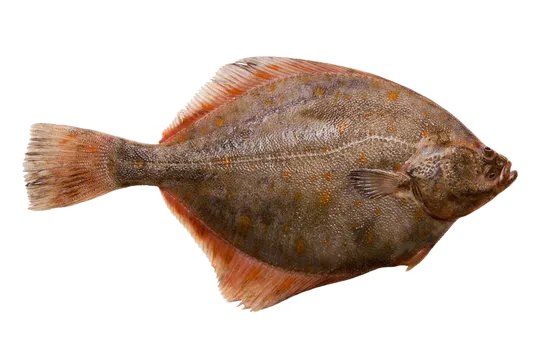

Master of Disguise
Flounder
Flounders lie flat against the seafloor, shifting color and pattern to vanish into sand or mud. Their asymmetric eyes give them a panoramic view while they patiently await unsuspecting prey.
Interesting Facts
- As they mature, one eye migrates across the head so both rest on the same side—perfect for life on the ocean floor.
- Chromatophores in their skin allow flounders to mimic textures and hues in seconds.
- By preying on crustaceans and small fish, they help regulate coastal food webs.
